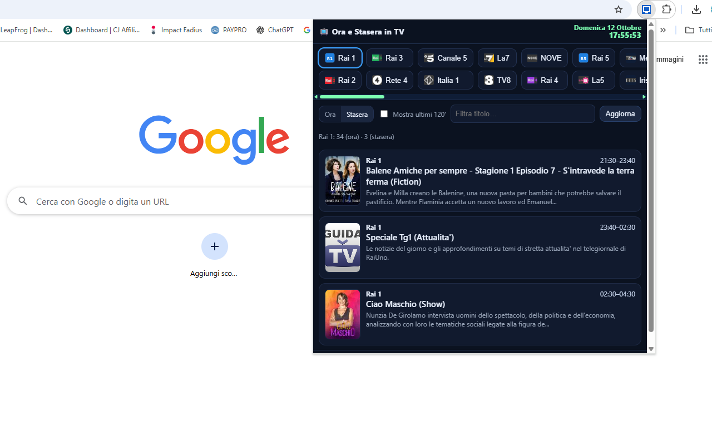
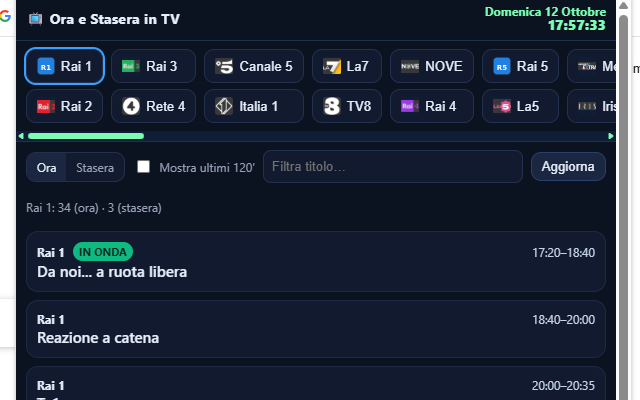

Ora e Stasera in TV
Ora e Stasera in TV è la guida TV leggera e immediata per i canali italiani. Mostra cosa c’è adesso e cosa andrà stasera (prima/seconda serata) con orario in tempo reale, badge IN ONDA, filtri rapidi, loghi canale e locandine dei programmi. Tutto dentro un popup compatto, senza aprire nuove schede.
Apri il popup per vedere subito la programmazione: la scheda Ora parte dal programma corrente e mostra i successivi; la scheda Stasera evidenzia la fascia di prima/seconda serata, con thumb e breve sinossi (quando disponibili). Puoi filtrare per titolo, mostrare anche gli ultimi 120 minuti, e passare tra i canali principali con una barra su due righe e scorrimento orizzontale personalizzato.
🚀 Avvio rapido
- Installa dal Chrome Web Store (sostituisci il link quando pubblico)
- Fissa l’icona vicino alla barra degli indirizzi.
- Apri il popup: per default vedi Rai 1 e l’orario in tempo reale (data + orologio).
- Passa a Stasera per la prima/seconda serata: titolo, ora, locandina e sinossi breve.
- Usa la barra canali (2 righe) per spostarti tra Rai/Mediaset/La7/TV8/NOVE ecc.
📷 Screenshot


✅ Funzionalità
- In onda ora: dal programma corrente in avanti; badge IN ONDA.
- Stasera in TV: fascia 20:30–notte con poster e sinossi dove disponibili.
- Orologio & data in tempo reale nel popup (secondi inclusi).
- Filtro titolo + toggle per includere le ultime 2 ore già trascorse.
- Barra canali su 2 righe con scorrimento orizzontale personalizzato e loghi.
- Ordine prioritario (Rai 1, Rai 2, Rai 3, Rete 4, Canale 5, Italia 1, La7, TV8, NOVE… poi gli altri).
- Normalizzazione immagini: URL con apostrofi/spazi sistemati; placeholder se il path non è un’immagine.
- Cache leggera in memoria per ridurre richieste ripetute durante la sessione.
- Tema scuro compatto, pronto all’uso su Chrome ed Edge.
📡 Fonte dati
La programmazione è estratta dalle pagine pubbliche di staseraintv.com tramite un piccolo proxy lato server (per motivi CORS). Le locandine vengono normalizzate e, se l’URL non termina con un’estensione immagine, si usa una piccola immagine di fallback.
🔒 Permessi (perché servono)
- Storage — salva preferenze e piccole impostazioni in locale.
- Host permissions — accesso a
staseraintv.come all’URL del proxy (es.download77.net/tvproxy.php) per scaricare i palinsesti.
❓ FAQ
Perché vedo l’immagine segnaposto?
Alcune locandine usano URL privi di estensione immagine: in questi casi l’estensione usa un placeholder per evitare errori di caricamento.
Posso cambiare l’ordine dei canali?
Sì: l’ordine prioritario è configurato nel codice; puoi modificarlo o aggiungere canali in qualsiasi momento.
Posso aggiungere i loghi ufficiali?
Sì: inserisci i file in icons/channels/ con il nome dello slug del canale (es. rai1.png, canale5.png).
Privacy?
Nessun account, nessun tracciamento: le preferenze restano in locale; le richieste vanno solo verso le fonti indicate.